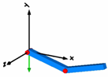

Modelica.UsersGuide
Modelica.UsersGuide
Modelica.UsersGuidePackage Modelica is a standardized and pre-defined package that is developed together with the Modelica language from the Modelica Association, see http://www.Modelica.org. It is also called Modelica Standard Library. It provides constants, types, connectors, partial models and model components in various disciplines.
This is a short User's Guide for the overall library. Some of the main sublibraries have their own User's Guides that can be accessed by the following links:
| Digital | Library for digital electrical components based on the VHDL standard (2-,3-,4-,9-valued logic) |
| MultiBody | Library to model 3-dimensional mechanical systems |
| Rotational | Library to model 1-dimensional mechanical systems |
| Media | Property models of media |
| SIunits | Type definitions based on SI units according to ISO 31-1992 |
| StateGraph | Library to model discrete event and reactive systems by hierarchical state machines |
| Utilities | Utility functions especially for scripting (Files, Streams, Strings, System) |
| Name | Description |
|---|---|
| Overview of Modelica Library | |
| Connectors | |
| Conventions | |
| Parameter defaults | |
| Release notes | |
| Modelica License (Version 1.1 of June 30, 2000) | |
| Contact |
Modelica.UsersGuide.OverviewThe Modelica Standard Library consists of the following main sub-libraries:
| Library Components | Description |
|---|---|

|
Analog Analog electric and electronic components, such as resistor, capacitor, transformers, diodes, transistors, transmission lines, switches, sources, sensors. |

|
Digital Digital electrical components based on the VHDL standard, like basic logic blocks with 9-value logic, delays, gates, sources, converters between 2-, 3-, 4-, and 9-valued logic. |

|
Machines Electrical asynchronous-, synchronous-, and DC-machines (motors and generators) as well as 3-phase transformers. |
|
|
Translational 1-dim. mechanical, translational systems, e.g., sliding mass, mass with stops, spring, damper. |

|
Rotational 1-dim. mechanical, rotational systems, e.g., inertias, gears, planetary gears, convenient definition of speed/torque dependent friction (clutches, brakes, bearings, ..) |
  |
MultiBody 3-dim. mechanical systems consisting of joints, bodies, force and sensor elements. Joints can be driven by drive trains defined by 1-dim. mechanical system library (Rotational). Every component has a default animation. Components can be arbitrarily connected together. |

|
Media Large media library providing models and functions to compute media properties, such as h = h(p,T), d = d(p,T), for the following media:
|

|
FluidHeatFlow,
HeatTransfer Simple thermo-fluid pipe flow, especially to model cooling of machines with air or water (pipes, pumps, valves, ambient, sensors, sources) and lumped heat transfer with heat capacitors, thermal conductors, convection, body radiation, sources and sensors. |
 
|
Blocks Input/output blocks to model block diagrams and logical networks, e.g., integerator, PI, PID, transfer function, linear state space system, sampler, unit delay, discrete transfer function, and/or blocks, timer, hysteresis, nonlinear and routing blocks, sources, tables. |

|
StateGraph Hierarchical state machines with a similar modeling power as Statecharts. Modelica is used as synchronous action language, i.e. deterministic behavior is guaranteed |
A = [1,2,3;
3,4,5;
2,1,4];
b = {10,22,12};
x = Matrices.solve(A,b);
Matrices.eigenValues(A);
|
Math,
Utilities Functions operating on vectors and matrices, such as for solving linear systems, eigen and singular values etc., and functions operating on strings, streams, files, e.g., to copy and remove a file or sort a vector of strings. |
Modelica.UsersGuide.ConnectorsThe Modelica standard library defines the most important elementary connectors in various domains. If any possible, a user should utilize these connectors in order that components from the Modelica Standard Library and from other libraries can be combined without problems. The following elementary connectors are defined (potential variables are connector variables without the flow attribute, flow variables are connector variables that have the flow attribute):
| domain | pot. variables | flow variables | connector definition | icons |
| electrical analog |
electrical potential | electrical current | Modelica.Electrical.Analog.Interfaces
Pin, PositivePin, NegativePin |
 |
| electrical multi-phase |
vector of electrical pins | Modelica.Electrical.MultiPhase.Interfaces
Plug, PositivePlug, NegativePlug |
 | |
| electrical sphace phasor |
2 electrical potentials | 2 electrical currents | Modelica.Electrical.Machines.Interfaces
SpacePhasor |
 |
| electrical digital |
Integer (1..9) | --- | Modelica.Electrical.Digital.Interfaces
DigitalSignal, DigitalInput, DigitalOutput |
 |
| translational | distance | cut-force | Modelica.Mechanics.Translational.Interfaces
Flange_a, Flange_b |
|
| rotational | angle | cut-torque | Modelica.Mechanics.Rotational.Interfaces
Flange_a, Flange_b |
 |
| 3-dim. mechanics |
position vector orientation object |
cut-force vector cut-torque vector |
Modelica.Mechanics.MultiBody.Interfaces
Frame, Frame_a, Frame_b, Frame_resolve |
 |
| simple fluid flow |
pressure specific enthalpy |
mass flow rate enthalpy flow rate |
Modelica.Thermal.FluidHeatFlow.Interfaces
FlowPort, FlowPort_a, FlowPort_b |
 |
| heat transfer |
temperature | heat flow rate | Modelica.Thermal.HeatTransfer.Interfaces
HeatPort, HeatPort_a, HeatPort_b |
 |
| block diagram |
Real variable Integer variable Boolean variable |
--- | Modelica.Blocks.Interfaces
RealSignal, RealInput, RealOutput IntegerSignal, IntegerInput, IntegerOutput BooleanSignal, BooleanInput, BooleanOutput |
|
| state machine |
Boolean variables (occupied, set, available, reset) |
--- | Modelica.StateGraph.Interfaces
Step_in, Step_out, Transition_in, Transition_out |
 |
| Connectors from libraries that will be included in one of the next releases of package Modelica | ||||
| thermo fluid flow |
pressure specific enthalpy mass fractions |
mass flow rate enthalpy flow rate subst. mass flow rates |
Modelica_Fluid.Interfaces
FluidPort, FluidPort_a, FluidPort_b |
 |
| magnetic | magnetic potential | magnetic flux | Magnetic.Interfaces
MagneticPort, PositiveMagneticPort, NegativeMagneticPort |
 |
| Connectors from other libraries | ||||
| hydraulic | pressure | volume flow rate | HyLibLight.Interfaces
Port_A, Port_b |
 |
| pneumatic | pressure | mass flow rate | PneuLibLight.Interfaces
Port_1, Port_2 |
|
In all domains, usually 2 connectors are defined. The variable declarations are identical, only the icons are different in order that it is easy to distinguish connectors of the same domain that are attached at the same component.
Modelica supports also hierarchical connectors, in a similar way as hierarchical models. As a result, it is, e.g., possible, to collect elementary connectors together. For example, an electrical plug consisting of two electrical pins can be defined as:
connector Plug
import Modelica.Electrical.Analog.Interfaces;
Interfaces.PositivePin phase;
Interfaces.NegativePin ground;
end Plug;
With one connect(..) equation, either two plugs can be connected (and therefore implicitly also the phase and ground pins) or a Pin connector can be directly connected to the phase or ground of a Plug connector, such as "connect(resistor.p, plug.phase)".
Modelica.UsersGuide.ConventionsNote, in the html documentation of any Modelica library, the headings "h1, h2, h3" should not be used, because they are utilized from the automatically generated documentation/headings. Additional headings in the html documentation should start with "h4".
In the Modelica package the following conventions are used:
Modelica.UsersGuide.ParameterDefaultsIn this section the convention is summarized how default parameters are handled in the Modelica Standard Library (since version 3.0).
Many models in this library have parameter declarations to define constants of a model that might be changed before simulation starts. Example:
model SpringDamper parameter Real c(final unit="N.m/rad") = 1e5 "Spring constant"; parameter Real d(final unit="N.m.s/rad") = 0 "Damping constant"; parameter Modelica.SIunits.Angle phi_rel0 = 0 "Unstretched spring angle"; ... end SpringDamper;
In Modelica it is possible to define a default value of a parameter in the parameter declaration. In the example above, this is performed for all parameters. Providing default values for all parameters can lead to errors that are difficult to detect, since a modeler may have forgotten to provide a meaningful value (the model simulates but gives wrong results due to wrong parameter values). In general the following basic situations are present:
To handle the conflicting goals of (1) and (3), the Modelica Standard Library uses two approaches to define default parameters, as demonstrated with the following example:
model SpringDamper parameter Real c(final unit="N.m/rad" , start=1e5) "Spring constant"; parameter Real d(final unit="N.m.s/rad", start= 0) "Damping constant"; parameter Modelica.SIunits.Angle phi_rel0 = 0 "Unstretched spring angle"; ... end SpringDamper; SpringDamper sp1; // warning for "c" and "d" SpringDamper sp2(c=1e4, d=0); // fine, no warning
Both definition forms, using a "start" value (for "c" and "d") and providing a declaration equation (for "phi_rel0"), are valid Modelica and define the value of the parameter. By convention, it is expected that Modelica translators will trigger a warning message for parameters that are not defined by a declaration equation, by a modifier equation or in an initial equation/algorithm section. A Modelica translator might have options to change this behavior, especially, that no messages are printed in such cases and/or that an error is triggered instead of a warning.
Modelica.UsersGuide.ModelicaLicenseRedistribution and use in source and binary forms, with or without modification are permitted, provided that the following conditions are met:
The software (sources, binaries, etc.) in their original or in a modified form are provided "as is" and the copyright holders assume no responsibility for its contents what so ever. Any express or implied warranties, including, but not limited to, the implied warranties of merchantability and fitness for a particular purpose are disclaimed. In no event shall the copyright holders, or any party who modify and/or redistribute the package, be liable for any direct, indirect, incidental, special, exemplary, or consequential damages, arising in any way out of the use of this software, even if advised of the possibility of such damage.
Modelica.UsersGuide.ContactSince end of 2007, the development of the sublibraries of package Modelica is organized by personal and/or organizational library officers assigned by the Modelica Association. They are responsible for the maintenance and for the further organization of the development. Other persons may also contribute, but the final decision for library improvements and/or changes is performed by the responsible library officer(s). In order that a new sublibrary or a new version of a sublibrary is ready to be released, the responsible library officers report the changes to the members of the Modelica Association and the library is made available for beta testing to interested parties before a final decision. A new release of a sublibrary is formally decided by voting of the Modelica Association members.
The following library officers are currently assigned:
| Sublibrary | Library officers|
| Blocks Constants |
DLR Institute of Robotics and Mechatronics, Oberpfaffenhofen, Germany (Martin Otter) |
| Electrical.Analog, Electrical.Digital |
Fraunhofer Institute for Integrated Circuits, Dresden, Germany (Christoph Clauss) |
| Electrical.Machines Electrical.MultiPhase |
Anton Haumer, Consultant, St.Andrae-Woerdern, Austria, and arsenal research, Vienna, Austria (Christian Kral) |
| Icons | Modelon AB, Lund, Sweden (Johan Andreasson) |
| Math | DLR Institute of Robotics and Mechatronics, Oberpfaffenhofen, Germany (Martin Otter) |
| Mechanics.MultiBody | DLR Institute of Robotics and Mechatronics, Oberpfaffenhofen, Germany (Martin Otter), Modelon AB, Lund, Sweden (Johan Andreasson) |
| Mechanics.Rotational | DLR Institute of Robotics and Mechatronics, Oberpfaffenhofen, Germany (Martin Otter) Anton Haumer, Consultant, St.Andrae-Woerdern, Austria, arsenal research, Vienna, Austria (Christian Kral), Modelon AB, Lund, Sweden (Johan Andreasson) |
| Mechanics.Translational | Anton Haumer, Consultant, St.Andrae-Woerdern, Austria, arsenal research, Vienna, Austria (Christian Kral), DLR Institute of Robotics and Mechatronics, Oberpfaffenhofen, Germany (Martin Otter) Modelon AB, Lund, Sweden (Johan Andreasson) |
| Media | Modelon AB, Lund, Sweden (Hubertus Tummescheit) |
| SIunits StateGraph |
DLR Institute of Robotics and Mechatronics, Oberpfaffenhofen, Germany (Martin Otter) |
| Thermal.FluidHeatFlow Thermal.HeatTransfer |
Anton Haumer, Consultant, St.Andrae-Woerdern, Austria, and arsenal research, Vienna, Austria (Christian Kral) |
| Utilities | DLR Institute of Robotics and Mechatronics, Oberpfaffenhofen, Germany (Martin Otter) Dynasim AB, Lund, Sweden (Hans Olsson) |
The following people have directly contributed to the implementation of the Modelica package (many more people have contributed to the design):
| Peter Beater | University of Paderborn, GermanyModelica.Mechanics.Translational |
| Dag Brück | Dynasim AB, Lund, SwedenModelica.Utilities |
| Francesco Casella | Politecnico di Milano, Milano, ItalyModelica.Media |
| Christoph Clauss | Fraunhofer Institute for Integrated Circuits, Modelica.Electrical.Analog Modelica.Electrical.Digital |
| Jonas Eborn | Modelon AB, Lund, SwedenModelica.Media |
| Hilding Elmqvist | Dynasim AB, Lund, Sweden Modelica.Mechanics.MultiBody Modelica.Media Modelica.StateGraph Modelica.Utilities Conversion from 1.6 to 2.0 |
| Rüdiger Franke | ABB Corporate Research,Modelica.Media |
| Anton Haumer | Consultant, St.Andrae-Woerdern, Modelica.Electrical.Machines Modelica.Electrical.Multiphase Modelica.Mechanics.Rotational Modelica.Mechanics.Translational Modelica.Thermal.FluidHeatFlow Modelica.Thermal.HeatTransfer Conversion from 1.6 to 2.0 Conversion from 2.2 to 3.0 |
| Hans-Dieter Joos | Institute of Robotics and MechatronicsModelica.Math.Matrices |
| Christian Kral | arsenal research, Vienna, Austria Modelica.Electrical.Machines Modelica.Thermal.FluidHeatFlow |
| Sven Erik Mattsson | Dynasim AB, Lund, SwedenModelica.Mechanics.MultiBody |
| Hans Olsson | Dynasim AB, Lund, Sweden Modelica.Blocks Modelica.Math.Matrices Modelica.Utilities Conversion from 1.6 to 2.0 Conversion from 2.2 to 3.0 |
| Martin Otter | Institute of Robotics and Mechatronics Modelica.Blocks Modelica.Mechanics.MultiBody Modelica.Mechanics.Rotational Modelica.Mechanics.Translational Modelica.Math Modelica.Media Modelica.SIunits Modelica.StateGraph Modelica.Thermal.HeatTransfer Modelica.Utilities ModelicaReference Conversion from 1.6 to 2.0 Conversion from 2.2 to 3.0 |
| Katrin Prölß | Department of Technical Thermodynamics,Modelica.Media |
| Christoph C. Richter | Institut für Thermodynamik,Modelica.Media |
| André Schneider | Fraunhofer Institute for Integrated Circuits, Modelica.Electrical.Analog Modelica.Electrical.Digital |
| Christian Schweiger | Until 2006: Modelica.Mechanics.Rotational ModelicaReference Conversion from 1.6 to 2.0 |
| Michael Tiller | Emmeskay, Inc., Dearborn, MI, U.S.A, Modelica.Media Modelica.Thermal.HeatTransfer |
| Hubertus Tummescheit | Modelon AB, Lund, Sweden Modelica.Media Modelica.Thermal.HeatTransfer |
| Nico Walter | Master thesis at HTWK LeipzigModelica.Math.Matrices |